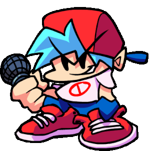
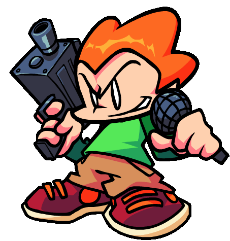
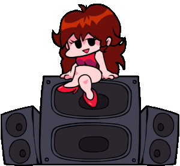

Friday Night Funkin'
Friday Night Funkin'(FNF) — це безкоштовна ритм-гра з відкритим вихідним кодом, яка стала справжнім культурним феноменом після свого виходу наприкінці 2020 року. Сюжет досить простий: ви граєте за хлопця (Boyfriend), який хоче піти на побачення з дівчиною (Girlfriend), але її батько, колишній рок-зірка, та інші дивні персонажі стають на заваді. Щоб перемогти, вам потрібно довести свою майстерність у реп-батлах.
Основні характеристики гри
- Геймплей: Вам потрібно вчасно натискати стрілки на клавіатурі відповідно до ритму пісні.
- Візуальний стиль: Гра виконана у стилі флеш-ігор 2000-х років, що викликає приємну ностальгію.
- Модифікації: Завдяки відкритому коду, фанати створили тисячі модів з новими героями та піснями.
Чим корисна гра FNF?
Хоча на перший погляд це просто розвага, гра має кілька реальних переваг для розвитку навичок:
- Розвиток почуття ритму:
- Покращення реакції та координації:
- Концентрація уваги:
- Зняття стресу (через сублімацію):
- Спільнота та творчість:
Гра вчить відчувати біт та темп. Це база для тих, хто хоче займатися музикою, танцями або вокалом.
На високих рівнях складності швидкість стрілок стає шаленою. Це тренує зорово-моторну координацію (зв'язок «очі-руки») та швидкість прийняття рішень.
Щоб пройти складну пісню, потрібно бути максимально зосередженим протягом кількох хвилин. Найменше відволікання — і ви програли.
Енергійна музика та процес «батлу» допомагають виплеснути емоції. Це хороший спосіб переключитися після навчання чи роботи.
FNF надихає тисячі людей вчитися програмувати, малювати та писати музику, щоб створювати власні моди.

Boyfriend
Бойфренд (Boyfriend) — це головний герой популярної ритм-гри Friday Night Funkin' (FNF), головна мета якого — отримати дозвіл на побачення зі своєю коханою.
Історія персонажа: Вся історія Бойфренда в оригінальній грі обертається навколо його стосунків із Гьорлфренд (Girlfriend).Головний конфлікт: Бойфренд хоче бути разом із дівчиною, але її батьки (колишні рок-зірки та за сумісництвом демони) категорично проти цього.Музичні дуелі: Батько дівчини (Дорогий Татусь) викликає хлопця на вокальний батл. Щоб довести, що він гідний коханої, Бойфренд змушений перемагати у пісенних дуелях не лише батьків, а й безліч інших дивакуватих та небезпечних персонажів, яких наймають для його усунення (наприклад, кілера Піко).
Зовнішність та характер
Вигляд: Репер-початківець із яскраво-блакитним волоссям. Носить білу футболку із червоним знаком заборони, сині мішкуваті штани, червоні кросівки та червону бейсболку, повернуту назад.
Характер: Він неймовірно самовпевнений, впертий і майже нічого не боїться. Його складно налякати навіть монстрами чи смертельною небезпекою, оскільки він занадто зосереджений на своїй дівчині та музиці.
Мова: Бойфренд не розмовляє звичайною мовою, а спілкується виключно вокальними звуками у стилі скет-біту (на кшталт "біп", "боп", "скідоп").
Pico
Піко (Pico) — це один із головних тритагоністів та культових персонажів ритм-гри Friday Night Funkin' (FNF), який спочатку з'являється як найманий вбивця, а згодом стає іграбельним героєм. — це головний герой популярної ритм-гри Friday Night Funkin' (FNF),
Історія персонажа: оловний сюжет: Вся історія Піко в оригінальній грі починається на 3-му тижні (Week 3), куди він приходить за контрактом від Батька Дівчини (Daddy Dearest).Конфлікт: Піко мав ліквідувати Бойфренда, але на місці замовлення впізнає у своїй цілі колишнього хлопця. Через це він вирішує пощадити Бойфренда і натомість викликає його на вокальний батл.Музичні дуелі: Піко протистоїть Бойфренду на даху під треки "Pico", "Philly Nice" та "Blammed". Пізніше, на 7-му тижні (Week 7), він переходить на бік головних героїв та рятує їх від армії Танкменів, епічно відстрілюючись під час пісні "Stress".
Зовнішність та характер
Вигляд: Молодий хлопець із хаотичним рудим волоссям. Носить зелене худі, бежеві штани та кросівки. У лівій руці завжди тримає мікрофон, а в правій — пістолет-кулемет MAC-10.
Характер: Агресивний, рішучий і запальний, але при цьому вірний своїм принципам. Він страждає на ПТСР (після подій у своїй рідній школі у грі Pico's School), через що постійно перебуває в бойовій готовності та ніде не розлучається зі зброєю.
Мова: На відміну від скет-звуків Бойфренда, Піко спілкується більш чіткими, уривчастими вокальними фразами, які звучать агресивно, стрімко та часто імітують звуки стрілянини чи перезаряджання зброї.


Girlfriend
Гьорлфренд (Girlfriend) — це один із головних персонажів ритм-гри Friday Night Funkin' (FNF), кохана дівчина Бойфренда, заради стосунків з якою і відбуваються всі музичні батли.
Історія персонажа: Головний сюжет: Вся історія Гьорлфренд в оригінальній грі обертається навколо її романтичних стосунків із Бойфрендом.Конфлікт: Вона щиро кохає Бойфренда і підтримує його, проте її батьки (колишні рок-зірки) категорично проти цих стосунків і постійно намагаються розлучити пару, посилаючи проти хлопця різних ворогів.Музичні дуелі: Гьорлфренд не бере прямої участі у вокальних батлах (за винятком навчання та деяких треків). Замість цього вона сидить на величезній музичній колонці в центрі сцени, хитає головою в такт музиці та вболіває за свого хлопця, тримаючи для нього рахунок гри.
Зовнішність та характер
Вигляд: Молода дівчина з довгим каштановим волоссям. Вона носить коротку червону сукню без рукавів, червоні туфлі на підборах та має фарбовані нігті. Як і її батьки, вона насправді є чистокровним демоном, що іноді проявляється в її справжній демонічній формі (із червоною шкірою та рогами).
Характер: Весела, спокійна та дуже віддана. Її майже неможливо налякати більшістю небезпечних опонентів, оскільки вона повністю довіряє силі Бойфренда (хоча вона боїться грози та Чудовиська/Monster).
Мова: У самій грі вона майже не співає і не розмовляє, але в режимі навчання (Tutorial) вона підказує гравцеві базові рухи, а її голос звучить м'яко, мелодійно та жіночно.